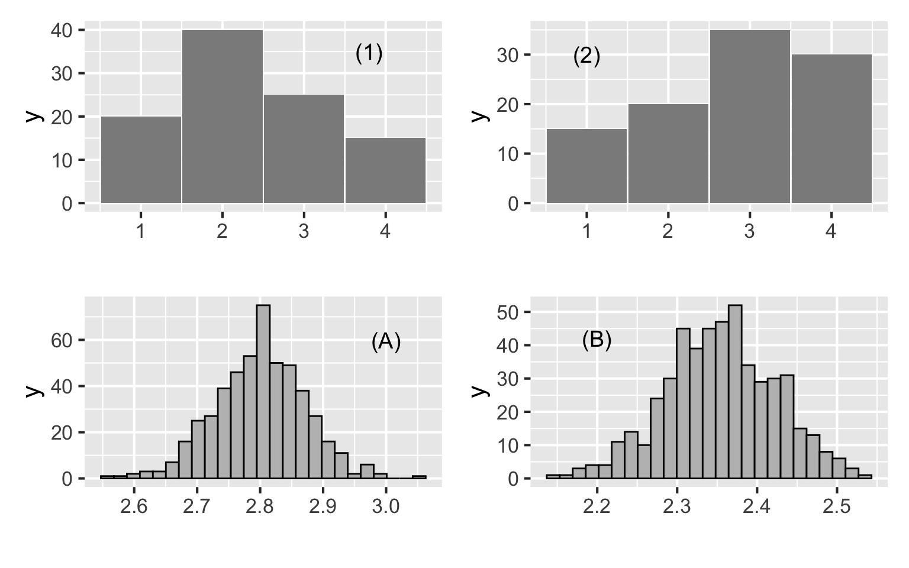
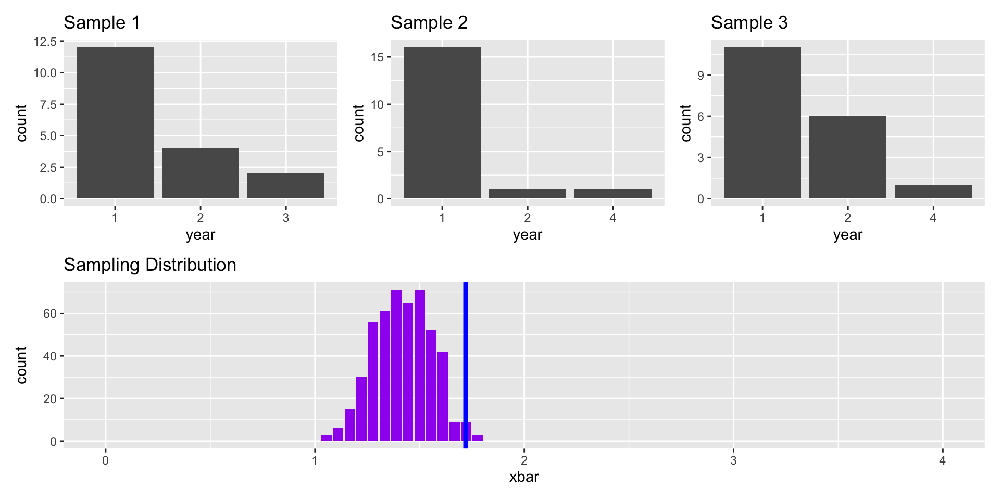
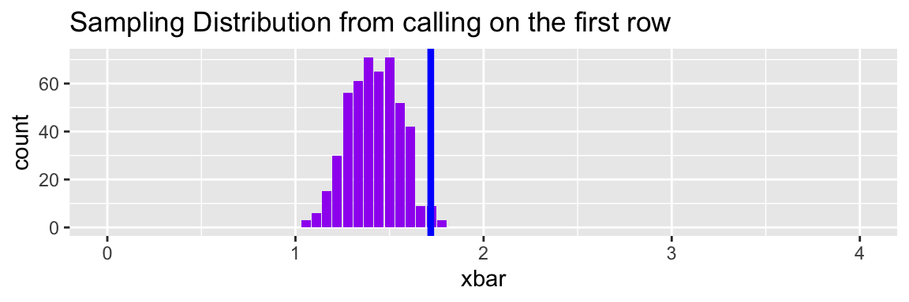

STAT 20: Introduction to Probability and Statistics
Agenda
Concept Questions
PS: Sampling Distributions
Lab
01:00
The top plots are population distributions; the bottom two are sampling distributions of the means from many samples of size 200. Match numbers to letters.

Scenario 1: Calling on the front row


How would the sampling distribution change if instead of calling on the front row, the Prof. put all 527 names on tickets in a box, mixed them up, then drew 18 names without replacement? Select the most dramatic change.
01:00
Scenario 2: Drawing names from a box
Say we want to estimate the size of an average class at Berkeley.
Should we survey the students, and ask them how large their classes are? Should we ask the administration? Does it matter?